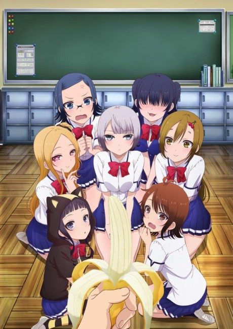

Uzaki-chan Wants to Hang Out!
宇崎ちゃんは遊びたい！
Uzaki, a loud underclassman, keeps trying to hang out with Sakurai, who just wants to be alone.
After the anime, read the manga from Chapter 62.
6.7AniList score
—Animeter, no votes yet
25episodes, 2 seasons
Rate it or report where you stopped
Anime finished. Where does the manga pick up?
Start at Chapter62
Season 2 reportedly ends around chapter 61 (end of volume 6), so start at chapter 62 (volume 7). The manga is still ongoing.
161ongoing
Season 2Start reading here
More like Uzaki-chan Wants to Hang Out!
 Unclear7.0
Unclear7.0
 Unclear7.9
Unclear7.9
 Manga Ch. 868.0
Manga Ch. 868.0
 Film8.2
Film8.2

Manga Ch. 335.8 Manga Ch. 408.4
Manga Ch. 408.4
 Done8.1
Done8.1
 Manga Ch. 346.7
Manga Ch. 346.7
 Manga Ch. 506.7
Manga Ch. 506.7
 Manga Ch. 298.1
Manga Ch. 298.1
 Manga Report 1097.8
Manga Report 1097.8
 Manga Ch. 867.7
Manga Ch. 867.7